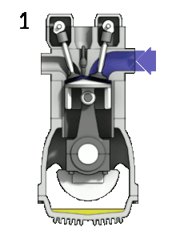
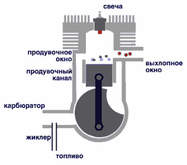

CHECK INGINE
Устройство двигателя внутреннего сгорания
В настоящее время двигатель внутреннего сгорания является основным видом автомобильного двигателя. Двигателем внутреннего сгорания (сокращенное наименование – ДВС) называется тепловая машина, преобразующая химическую энергию топлива в механическую работу. Различают следующие основные типы двигателей внутреннего сгорания: поршневой, роторно-поршневой и газотурбинный. Из представленных типов двигателей самым распространенным является поршневой ДВС, поэтому устройство и принцип работы рассмотрены на его примере.
Достоинствами поршневого двигателя внутреннего сгорания, обеспечившими его широкое применение, являются: автономность, универсальность (сочетание с различными потребителями), невысокая стоимость, компактность, малая масса, возможность быстрого запуска, многотопливность.
Вместе с тем, двигатели внутреннего сгорания имеют ряд существенных недостатков, к которым относятся: высокий уровень шума, большая частота вращения коленчатого вала, токсичность отработавших газов, невысокий ресурс, низкий коэффициент полезного действия.
В зависимости от вида применяемого топлива различают бензиновые и дизельные двигатели. Альтернативными видами топлива, используемыми в двигателях внутреннего сгорания, являются природный газ, спиртовые топлива – метанол и этанол, водород.
Водородный двигатель с точки зрения экологии является перспективным, т.к. не создает вредных выбросов. Наряду с ДВС водород используется для создания электрической энергии в топливных элементах автомобилей.Устройство 4-х тактного двигателя
Рабочим циклом двигателя называется периодически повторяющийся ряд последовательных процессов, протекающих в каждом цилиндре двигателя и обусловливающих превращение тепловой энергии в механическую работу. Автомобильные двигатели чаще всего работают по четырёхтактному циклу, который совершается за два оборота коленчатого вала или четыре хода поршня и состоит из тактов впуска, сжатия, расширения и выпуска.
В карбюраторном четырёхтактном двигателе рабочий цикл происходит следующим образом.
Такт сжатия
Поршень идёт из НМТ в ВМТ, сжимая рабочую смесь. При этом значительно возрастает температура смеси. Отношение рабочего объёма цилиндра в НМТ и объёма камеры сгорания в ВМТ называется степенью сжатия. Степень сжатия — очень важный параметр, обычно, чем она больше, тем больше топливная экономичность двигателя. Однако, для двигателя с большей степенью сжатия требуется топливо с большим октановым числом, которое дороже.
Такт расширения, или рабочий ход
Незадолго до конца цикла сжатия топливовоздушная смесь поджигается искрой от свечи зажигания. Во время пути поршня из ВМТ в НМТ топливо сгорает, и под действием тепла сгоревшего топлива рабочая смесь расширяется, толкая поршень. При расширении газы совершают полезную работу, поэтому ход поршня при этом такте коленчатого вала называют рабочим ходом. Степень «недоворота» коленчатого вала двигателя до ВМТ при поджигании смеси называется углом опережения зажигания. Опережение зажигания необходимо для того, чтобы сгорание топлива успело, полностью закончится к моменту достижения поршнем НМТ, то есть для наиболее эффективной работы двигателя. Сгорание топлива занимает практически фиксированное время, поэтому для повышения эффективности двигателя нужно увеличивать угол опережения зажигания при повышении оборотов. В старых двигателях эта регулировка производилась механическим устройством (центробежным и вакуумным регулятором, воздействующим на прерыватель). В современных двигателях для регулировки угла опережения зажигания используют электронику. Гифка наглядно демонстрирует процесс работы четырехтактного двигателя
Такт выпуска
После НМТ рабочего цикла открывается выпускной клапан, и движущийся вверх поршень вытесняет выхлопные газы из цилиндра двигателя. При достижении поршнем ВМТ выпускной клапан закрывается, и цикл начинается сначала. Полностью очистить цилиндры двигателя от продуктов сгорания практически невозможно (слишком мало времени), поэтому при последующем впуске свежей горючей смеси она перемещается с остаточными отработавшими газами и называется рабочей смесью. Коэффициент остаточных газов характеризует степень загрязнения свежего заряда отработавшими газами и представляет собой отношение массы продуктов сгорания, оставшихся в цилиндре, к массе свежей горючей смеси. Для карбюраторных двигателей коэффициент остаточных газов находится в пределах 0,06-0,12. По отношению к рабочему ходу такты впуска, сжатия и выпуска являются вспомогательными.
Устройство 2-х таксного двигателя
Рабочий цикл 2-х тактного двигателя состоит из двух этапов: сжатие и рабочий ход.
Сжатие
Основными положениями поршня являются верхняя мертвая точка (ВМТ) и нижняя мертвая точка (НМТ). Двигаясь от НМТ к ВМТ, поршень поочередно перекрывает сначала продувочное, а затем выпускное окно, после чего газ, находящийся в цилиндре, начинает сжиматься. При этом через впускное окно в кривошипную камеру поступает свежая горючая смесь, которая будет использована в последующем сжатии.
Рабочий ход.
После того, как горючая смесь максимально сжата, она воспламеняется при помощи электрической искры, образуемой свечой. При этом температура газовой смеси резко возрастает и объем газа стремительно растет, осуществляя давление, при котором поршень начинает движение к НМТ. Опускаясь, поршень открывает выпускное окно, при этом продукты горения горючей смеси выбрасываются в атмосферу. Дальнейшее движение поршня приводит к сжатию свежей горючей смеси и открытию продувочного отверстия, через которое горючая смесь поступает в камеру сгорания.
Основным недостатком двухтактного двигателя является большой расход топлива, причем часть топлива не успевает принести пользу. Это связано с наличием момента, при котором продувочное и выпускное отверстие одновременно открыты, что приводит к частичному выбросу горючей смеси в атмосферу. Еще идёт постоянный расход масла, так как 2х тактные двигатели работают на смеси бензина и масла. Очередное неудобство - в необходимости постоянно готовить топливную смесь.
Главными преимуществами двухтактного двигателя остаются его меньшие размеры и вес по сравнению с 4х тактным аналогом, но размеры силовой техники позволяют использовать на них 4х тактные двигатели и испытывать намного меньше хлопот в ходе эксплуатации. Так что уделом 2х тактных моторов осталось различное моделирование, в частности, авиамоделирование, где даже лишних 100г имеют значение.
Ушаков Павел©